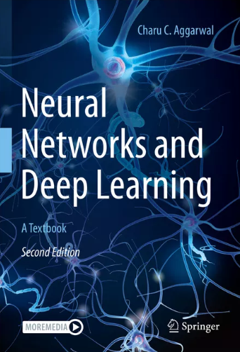
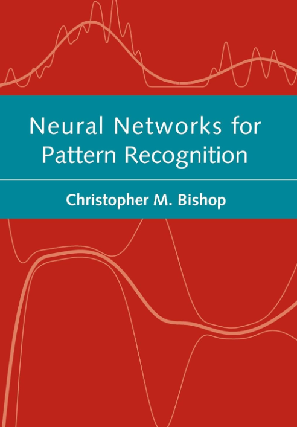
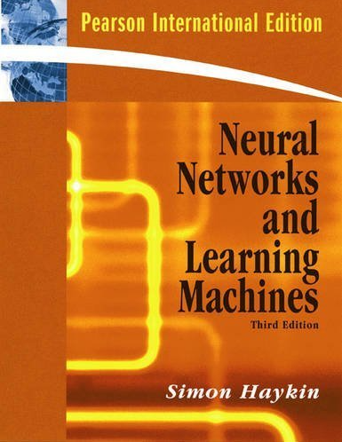

Books
-
Neural Networks and Deep Learning
"Neural Networks and Deep Learning" by Charu C. Aggarwal is an in-depth exploration of neural networks, covering both fundamental and advanced topics for students, researchers, and practitioners. The book introduces core concepts such as perceptrons, activation functions, and the mathematical foundations of neural learning, progressing to specialized architectures like convolutional neural networks (CNNs) for image analysis and recurrent neural networks (RNNs) for time-series data. Aggarwal also delves into complex models like autoencoders and generative adversarial networks (GANs), with a strong focus on optimization techniques, including gradient descent and backpropagation, as well as regularization methods to improve model robustness. Practical applications are highlighted throughout, with guidance on implementing neural networks using popular libraries, making it suitable for hands-on learners. The book also covers advanced topics like transfer learning and reinforcement learning, showing deep learning's adaptability across diverse applications. Through a balanced approach between mathematical rigor and practical insights, Aggarwal provides readers with the knowledge needed to design, train, and deploy effective neural networks, offering a comprehensive resource for mastering deep learning's evolving landscape.
Written by Charu C. Aggarwal

View the whole book here!
-
Neural Networks for Pattern Recognition
"Neural Networks for Pattern Recognition" by Christopher M. Bishop is a seminal text that delves deeply into the theory and applications of neural networks with a clear focus on pattern recognition. Bishop presents a rigorous yet accessible approach, making this book a staple for those in machine learning, statistics, and computer science who aim to understand the mathematical foundations of neural networks. Starting with basic structures like perceptrons, backpropagation, and feedforward networks, Bishop illustrates how neural networks learn, adapt, and optimize to accurately predict outcomes. The book interweaves crucial concepts from probability, statistics, and optimization, guiding readers through essential methods for training and refining models. Bishop goes further to explore advanced topics such as error functions, parameter optimization, and regularization techniques for minimizing overfitting, along with Bayesian approaches to manage prediction uncertainty—an invaluable asset in real-world applications. Throughout, Bishop uses detailed examples, equations, and diagrams to clarify complex theories, showing how neural networks can execute intricate tasks such as classification and feature extraction. Known for its depth and clarity, Bishop’s work provides readers with the theoretical and practical tools to design, implement, and optimize neural networks, making it a foundational resource for anyone seeking to advance in pattern recognition and neural network modeling.
Written by Christopher M. Bishop

View the whole book here!
-
Neural Networks and Learning Machines
"Neural Networks and Learning Machines" by Simon Haykin is a comprehensive and authoritative text that provides an in-depth exploration of neural networks and machine learning, blending foundational theories with practical insights. Haykin meticulously presents core concepts, starting with the basics of neural networks, including perceptrons and the fundamentals of biological neural models, and progresses to advanced architectures and learning algorithms. The book covers a wide range of neural network types, such as feedforward networks, radial-basis function networks, and self-organizing maps, while carefully explaining the mathematical principles that underpin these models. Haykin emphasizes the role of learning algorithms like backpropagation and Hebbian learning, showing how they enable networks to self-adjust and optimize for better accuracy. Beyond the fundamentals, Haykin also explores advanced topics, including support vector machines, adaptive resonance theory, and probabilistic neural networks, equipping readers with a diverse toolkit for tackling complex learning tasks. The book addresses real-world applications, demonstrating how neural networks can solve problems in areas such as speech recognition, computer vision, and adaptive control systems. Throughout, Haykin provides readers with a clear understanding of the connections between neural networks, statistical modeling, and machine learning. His focus on theoretical rigor combined with practical examples makes the book suitable for both students and professionals seeking a deep understanding of how neural networks function and how they can be applied effectively. By covering the historical evolution, current methodologies, and potential future directions of neural networks, Haykin’s work serves as a foundational reference, offering readers a thorough grasp of machine learning principles and an in-depth appreciation of the power and versatility of neural networks in a wide array of domains.
Written by Simon Haykin

View the whole book here!